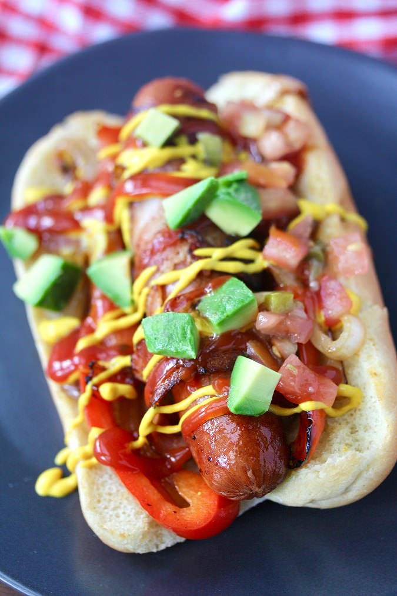

HOME
LA Dogs

Iconic LA HotDogs
This is an LA staple food and they're usually sold all over the city!
LA Dogs are very easy to prepare and are the perfect food for many occasions.
Ingredients
- hotdog buns
- sausage links
- bacon
- tomato diced
- Mayo
- onion diced or sliced
- ketchup and mustard
- (optional) add toppings of your choice avocados,relish,pickles, bacon bits, etc.
Steps
- wrap the links with bacon
- grill the onions
- grill the bacon wrapped links
- toast the hotdog buns
- add mayo to buns
- place bacon wrapped links on bun
- add toppings (onions and condiments)
- (optional) add other toppings of your choice